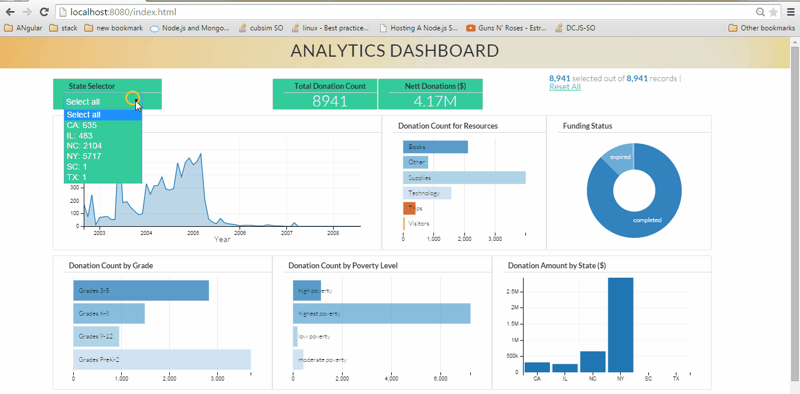
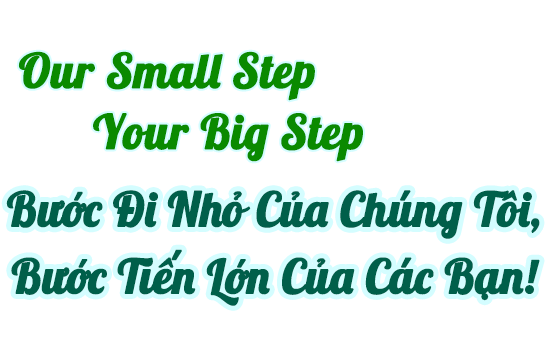
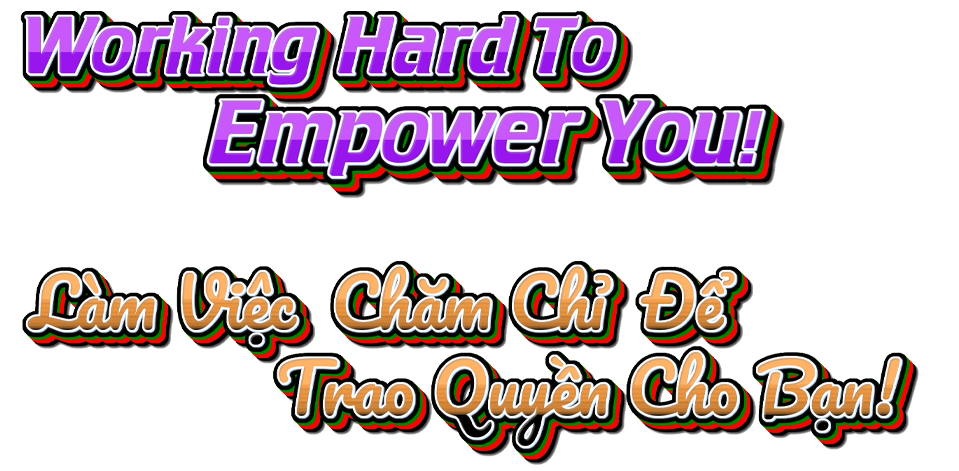
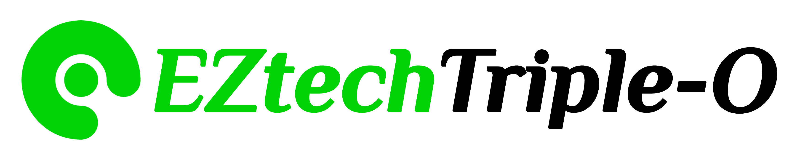

>>> Website , Luke!
Bạn là chủ sở hữu của một doanh nghiệp hay bạn vẫn là người mới bắt đầu? Hãy làm chủ các nền tảng chuyển đổi số để vận hành doanh nghiệp của bạn.
* Hãy mô tả ngắn gọn cho chúng tôi các chi tiết cụ thể về doanh nghiệp, sản phẩm hoặc ý tưởng của bạn.Chúng tôi cũng cần biết mục tiêu của bạn để hiểu được hướng đi của công việc trong tương lai. Hãy viết thư cho chúng tôi và chúng tôi sẽ trả lời ;) Hi@EZtech.Team